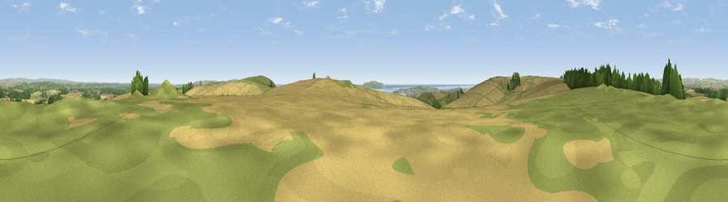

Viewpoint near Sutton Poyntz
#8434 in England · top 25% of its area beats it · near Sutton PoyntzThe view, rendered

A 360° render of this exact spot computed from the terrain model, tree cover and land cover — summer colours, afternoon light, calibrated against photographs of famous viewpoints. Real trees, hedges and buildings will differ in detail.
The panorama
Grey silhouette: terrain skyline in each direction (720 bearings, Earth curvature and refraction included). Dashed green: skyline with trees (+15 m) and buildings (+8 m) as obstacles. Blue strip: how far the ground is visible on each bearing.
Where the view opens
Wedge length = distance to the farthest visible ground on that bearing (vegetation-aware). Rings at 10, 25 and 50 km.
What fills the view
51% cropland · 32% grassland · 11% woodland · 3% water · 3% built-up
Angular shares of the visible panorama (visual magnitude), not map area. Landscape diversity 0.51 (0–1 Shannon).
Key numbers
More beautiful places nearby
The staircase of upgrades: each row has a higher view potential than everything closer. Driving times are estimates from straight-line distance, calibrated against real road routing — check an actual route before setting out.
| Place | Direction | Drive | Score |
|---|---|---|---|
| Viewpoint near Sutton Poyntz | SSE · 1 km | ~2 min | 76.9 |
| East Hill | SE · 1 km | ~3 min | 79.6 |
| Viewpoint near Sutton Poyntz | WSW · 2 km | ~4 min | 79.9 |
| Viewpoint near Owermoigne | ESE · 7 km | ~14 min | 81.0 |
| Viewpoint near Chaldon Herring | ESE · 7 km | ~15 min | 82.9 |
| Viewpoint near Chaldon Herring | ESE · 8 km | ~16 min | 83.5 |
| Viewpoint near Chaldon Herring | ESE · 9 km | ~18 min | 83.8 |
| Viewpoint near Abbotsbury | W · 14 km | ~26 min | 85.1 |
50.66627, -2.42143 · source: screening · position refined by local search. Computed location — check access rights before visiting.